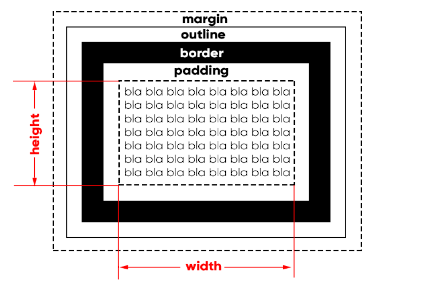

de fiorma simples e objetiova, baseqado em um conceito chamado "box model", a grande maioria dos emlementos html que temos no nosso site sao como caixas. elas sao containers que amarzenam conteudos ou ate mesmo outras caixas
Vamos analisar como uma caixca vai ser apresentada por todos os navegadores. Olhe atentamente oi diagrama a seguir. que é extamente o ja citado Modelo de caixa.
tudo comeca a partir do conteudo(content), que representamos acima com o blablabla... Por padrao, topda caixa é composta apenas pelo conteudo e nao possui padding , nem border, nem outline, e nem margin. Uma excessao curiosa é o elemento <Body> que ja vem com uma margin de 8px
todo conteudo possue uma largura e um comprimento e a esse conjunto de propriedades, damos o nome de box size o tamanho da caixa nao enclui as medidas de padding, borde,outiline e margin
deoius di cinteudo e seu tamanho, vamos focar na borda que fica em violta dele. Ela opode ter uma espessura, uma cor e um formato
entre a borde e o conteudo- da borda pra dentro- temos o preenchimento(padding) e da borda pra fora temos a margem(margin)
entre a margem a borda, podemos determinar o contorno(outline) que é muito pouco utilizado mas existe, ele é um tracado visual que podemos creiar fora da borda e o calculo de sua espessura faz párte da margem estabelecida.
usando shorthand
Um recurso que tambem vai ser muito usado em nossos exercicios é a centralizaxao de bkocos. para que isso seja tfeito, devemos pedir que o navegador caucule automatimente as margens da esquerda e da direita para que o bloco seja colocado no meio do navegador idependentemente do tamanho da tela, para utilizarmos isso declaramos no seletor margin: auto;
dependendo do comportamento da ciaxa, podemos classificar um elemento em uma de duas categorias:
um elemento dito block-level sempre vai indicar em uma nova linha e vai ocupar a largura total do elemento onde ele esta contido. Se nao estiver contido em nenhuma outra caixa, ele vai ocupar 100% da largura do <Body>.
O elemeto mais conhecido é o <Div> e suas variacoes semanticas da html5, como (Main,Section,Asisde,ETC)
Elementos Block Level
Um elemento tipo Inline-level nao vai comecar em uma nova linha, e sim no ponto exato onde foram definidos.E a largura dele vai ocupare apenas o tamanho relativvo ao seu conteudo

da pra transformar um inline em block level usando css com o parametro Display:block ou se voce quiser continuar mantendo em inlevel porem com caracteristicas de block level so utilizar Display:inline-block;